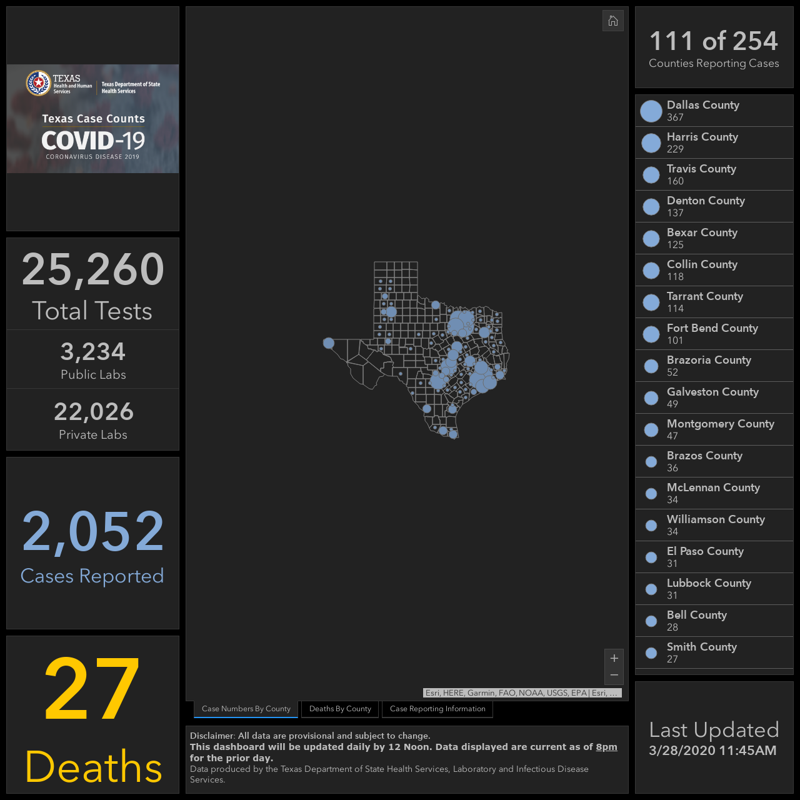

TX: Incorrect tests number for 3/29
For Texas, the number of Negative tests did not increase from 3/28 to 3/29, despite an increase in testing shown on the Texas dashboard, as seen on the screenshots on this page: https://covidtracking.com/data/state/texas/.
One possible issue, there were more positive cases reported from 3/28 to 3/29 (500) than tests administered (25,260 on 3/28, 25,483 on 3/29, according to the state dashboard). Having been keeping an eye on the state dashboard pretty closely for a couple of weeks now, I could see how this could happen, as the state only updates the dashboard once per day, and often times individual counties will update after that or multiple times a day.
This issue has been automatically marked as stale because it has not had recent activity. It will be closed if no further activity occurs. Thank you for your contributions!
Thanks for bringing our attention to this @johndhancock. When states are not reporting actual negatives, we are calculating a number. Lots of states say the lag on total tests reported can be > 72hrs. By our publish time on 3/29 it looked like there was a lag in the state reporting for the number of tests administered, so we carried over the Negative numbers from the previous day.
